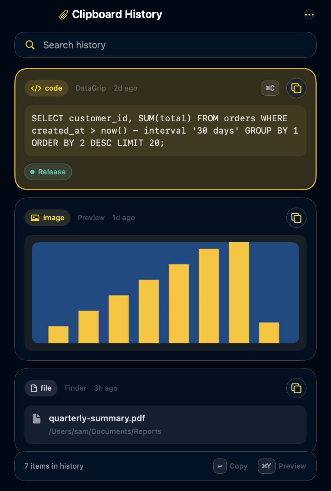
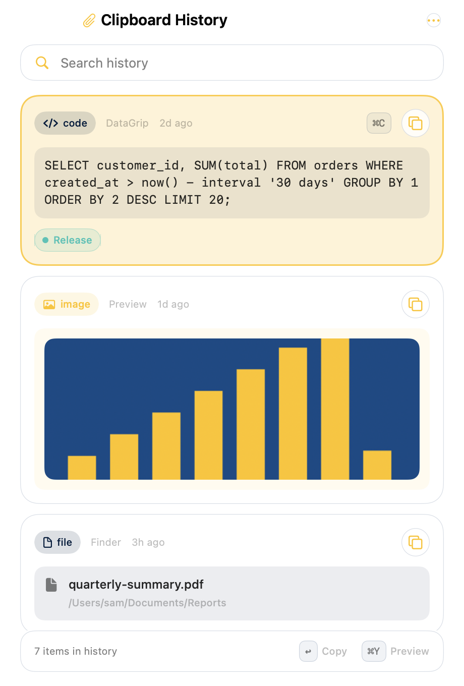
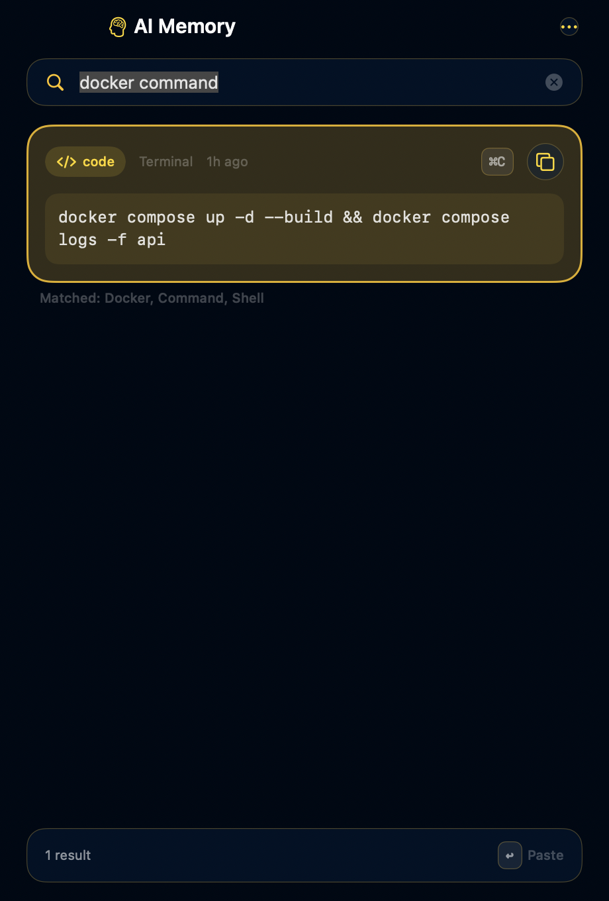

Free · Open source · macOS 14 Sonoma or later
Everything you copy,
one keystroke away.
Paperclip is a clipboard manager that lives in your menu bar. Press ⇧⌘V, pick a clip, and it lands back in the app you were working in. Text, links, images and files. Nothing leaves your Mac.
Version 1.3.0 · Universal (Apple Silicon & Intel) · DMG · verify checksum


Built for the keyboard
Your hands never leave the home row.
The History panel opens without stealing focus, so the clip you choose is pasted into the app you came from. Every action has a key.
- ⇧⌘VOpen History (customizable)
- ↑↓Move between clips
- ↩Paste into the previous app
- ⇧↩Paste as plain text
- ⌘1–9Quick-paste the first nine
- ⌘YFull-size preview
- ⌘FSearch history and memory
- ⌘CCopy without pasting
- ⌘⌫Delete a clip
- ⎋Back, then close
Features
A serious clipboard, nothing in the way.
-
Instant history
Captures text, links, images and files the moment you copy. Identical copies collapse into one clip and keep their pins, favorites and tags.
-
Paste where you were
The panel is non-activating. Choose a clip and Paperclip sends ⌘V to the app that had focus. Without Accessibility access it simply copies.
-
Rich text, preserved
Bold, links and colors are kept as an RTF sidecar and restored on paste. Hold ⇧ when you want plain text instead.
-
Images with OCR, files too
Screenshots are deduplicated by content and their text is recognised on-device, so you can search for words inside an image. File copies stay file copies.
-
Pinboards and favorites
Group clips into colored boards, star the ones you return to, queue a paste stack, rename clips, open links, reveal files, drag clips out.
-
Widget, themes, glass
A desktop and Notification Center widget, Light, Dark or System appearance, Liquid Glass on macOS 26 and an opaque mode when you prefer Reduce Transparency.
AI Memory · optional
Ask for the thing, not the timestamp.
With Apple Intelligence available, Paperclip classifies, tags and summarises clips on-device and understands plain questions. Without it, a fast heuristic layer does the same job with keywords. Either way, nothing is sent anywhere.
- “the docker command from last week”
- “that JSON with the API response”
- “links I copied yesterday afternoon”
- Categories, tags and one-line summaries per clip
- Smart actions: explain, rewrite, format JSON, extract
- AI data is a sidecar. Clear it any time; history stays
- Turn AI off entirely and the app is still complete

Privacy
Your clipboard is the most sensitive thing on your Mac. It stays there.
No network, by design
No account, no server, no analytics, no update pings. The source is public, so you can check.
Secrets are skipped
Likely passwords, API keys, private keys and card numbers are not stored. Concealed copies from password managers are always ignored.
You control the scope
Exclude apps, pause recording from the menu bar, hide the panel from screen sharing, and set how many clips to keep.
Plain files you own
History is JSON and PNG in your home folder. Back it up, inspect it, or delete it. Clearing AI metadata never touches history.
~/Library/Application Support/Paperclip/
history.json · pinboards.json · ai-metadata.json · Media/Install
Two minutes, no account.
-
1
Download and drag to Applications
Get the latest DMG, open it and drag Paperclip into Applications.
-
2
Open it once with right-click → Open
Builds are signed but not notarized (no Apple Developer Program membership), so macOS shows “the developer cannot be verified” the first time. Right-click the app, choose Open, then Open again. Or from Terminal:
xattr -d com.apple.quarantine /Applications/Paperclip.app -
3
Grant Accessibility if you want it to paste for you
Settings → General shows the status and opens the right System Settings pane. Without it, Paperclip copies the clip and you press ⌘V yourself.
Verify the download
Every release ships a SHA256SUMS.txt. Compare before you open the DMG:
shasum -a 256 -c SHA256SUMS.txtOr build it yourself
Only the Command Line Tools are needed. Universal release builds take a few minutes.
git clone https://github.com/mhadikz/Paperclip.git
cd Paperclip
./scripts/build.sh